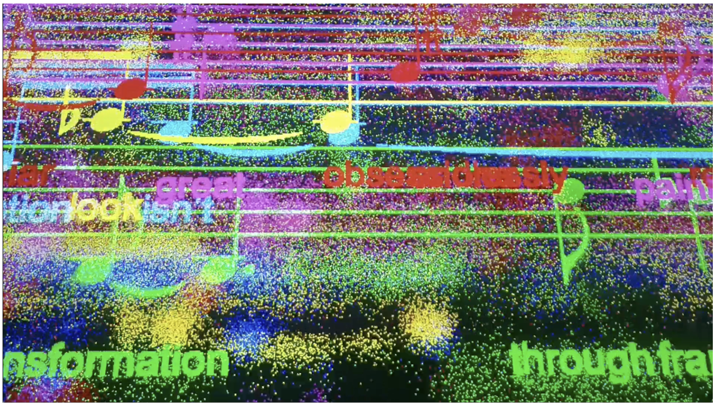
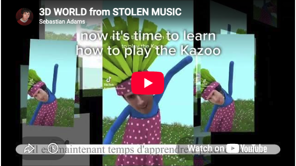
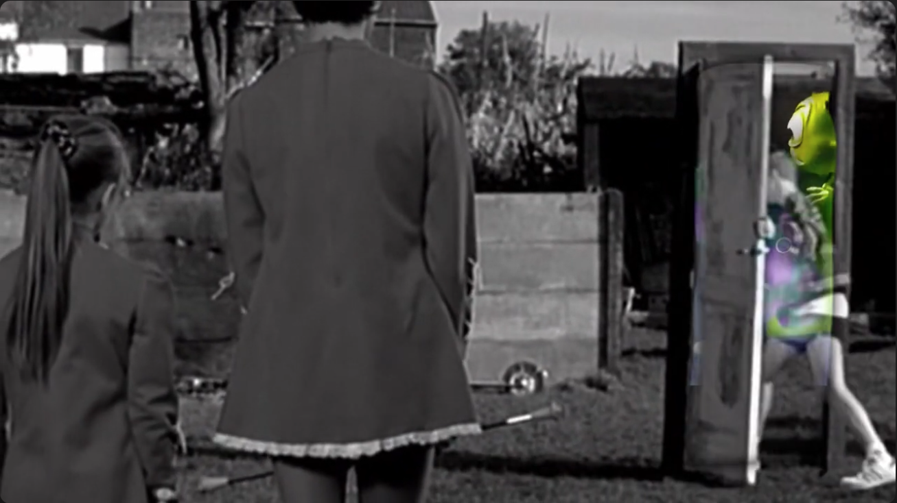
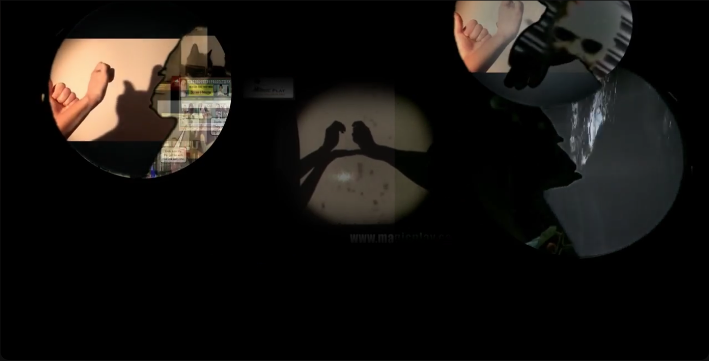
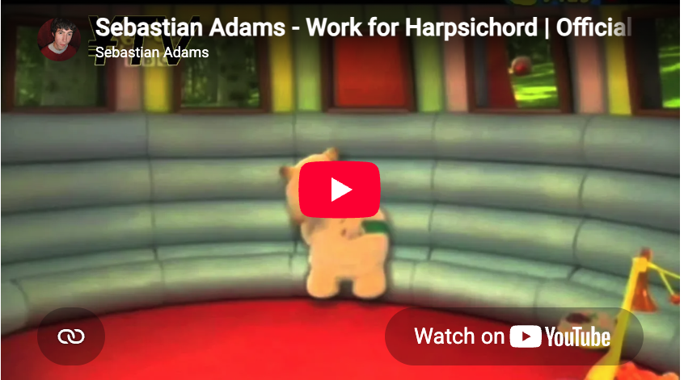
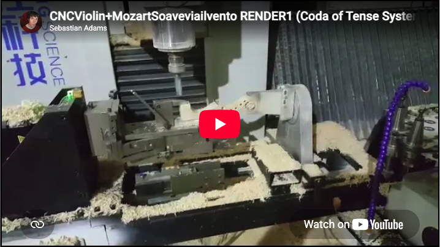
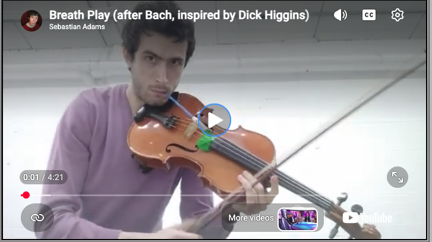

Currently, the site is a work in progress.... but we hope that we are already helping you to reconsider the perceived primacy of material, and re-evaluate their notions of ownership and even authorship when it comes to music (and intellectual property generally).
The software elements of this project are unlicensed (dedicated to the public domain) using the Unlicense, and the non-software elements created for this website are dedicated to the public using CC0. The software elements have not been published yet but WILL be published here in due course. You can enquire about obtaining these by contacting Sebastian Adams directly. Any pre-existing material on this website created by other artists (which may not be directly attributed here) has been used without permission and in breach of copyright law: you re-use this material at your own risk and in violation of the moral rights of the authors.
THE SOFTWARE IS PROVIDED "AS IS", WITHOUT WARRANTY OF ANY KIND, EXPRESS OR IMPLIED, INCLUDING BUT NOT LIMITED TO THE WARRANTIES OF MERCHANTABILITY, FITNESS FOR A PARTICULAR PURPOSE AND NONINFRINGEMENT. IN NO EVENT SHALL THE AUTHORS BE LIABLE FOR ANY CLAIM, DAMAGES OR OTHER LIABILITY, WHETHER IN AN ACTION OF CONTRACT, TORT OR OTHERWISE, ARISING FROM, OUT OF OR IN CONNECTION WITH THE SOFTWARE OR THE USE OR OTHER DEALINGS IN THE SOFTWARE. For more information, please refer to unlicense.org.

LEARN THE KAZOO WITH MY AMAZING SLIDWSHOW!!!





FREMDARBEIT - Kreidler outsources his work (LAZY!) PETTING ZOO - Ingamells outsources his work (LAZY!)drifting_thought_01
the perceived primacy of material